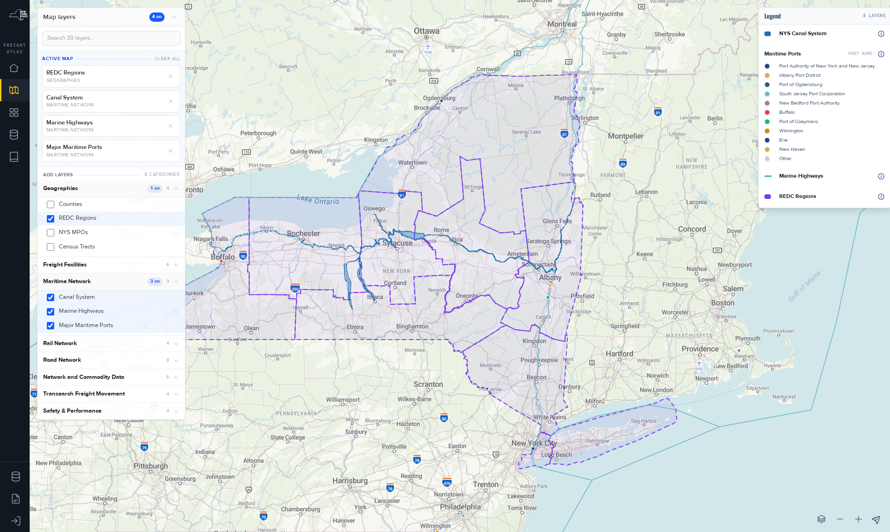

Open a map, read it, share it.
About 10 minutes. You open the Freight Atlas, choose one of the 2024 State Freight Plan's maps in the Maps Gallery, read its legend, add a layer of your own and send the result as an address. No account is needed.
What you will do
Start from a map the plan published, rebuilt as a live view, then make it yours: one more layer, one changed view, and a link a colleague can open to the same layers. On the way you meet the two panels that run the map, Map layers and Legend.
Before you start
Start at the landing page or on any product page. The Freight Atlas reads without sign-in. The map opens with every layer off. Only a gallery tile or a shared address turns layers on for you, so an empty map at the start is normal.
Steps
- Open the Freight Atlas. Select Freight Atlas in the landing page's side navigation.The Freight Atlas home opens. Its side navigation is headed Freight Atlas and lists Home, Freight Atlas, Maps Gallery, Data & Downloads and About & The Plan.
- Open Maps Gallery.Seven groups of tiles, 22 tiles in all, one per plan figure the map can draw today. Each tile shows the figure number and plan page, a title, a sentence of context, a layer count and open in Freight Atlas →.
- Under Maritime, Air & Pipelines find New York's Maritime System and select open in Freight Atlas →.The map opens with that figure's layers on. The Map layers panel header counts them, for example 4 on for this figure, whose tile also switches on the REDC Regions layer, and the Legend panel shows one block per layer.
- Read the legend. Each block is one layer: its title, then its symbols with their labels. The ports block lists ports by name, the canal block has one symbol. Select the info button beside a title, About this data — view the source page.The dataset behind that layer opens in Data & Downloads. Use the browser's back button to return to the map.
- Hover a feature on the map.A popup lists the fields configured for that layer, for example Canal Name on the canal system.
- Add a layer. In Map layers under Add layers, open Rail Network and tick 2024 Core Rail Freight Network.The header count rises by one. The layer appears under Active map with its category name, and a legend block with Last Mile, Statewide and National appears.
- Try a layer with views. Open Road Network and tick Traffic Volume & Road Attributes. In its Active map row, change Show from AADT to AADT (Combination Trucks).The road colours and the legend bins change to combination-truck volumes. The layer's row in the list reads 7 views: one layer, seven ways to colour it.
- Share the map. Copy the address from the address bar and paste it into a new tab.The same layers come on. The address carries
layers=followed by the ids of the layers that are on, separated by|||. It does not carry the map position, the zoom level or your Show choice. - Take a layer off. Select Remove from map, the × in its Active map row, or untick it under Add layers. Clear all empties the map.The count falls, the legend block goes, and the address updates.

What you now have
A plan figure as a live map, one layer of your own on top of it, the meaning of every colour on screen, the dataset behind each layer one click away, and an address that reproduces the layers for anyone. And two rules that save time: the map starts empty by design, and the address remembers layers but not position.
Where to go next
- Use the map · every control, the address contract, and the gotchas.
- Maps Gallery · the 22 figures, why one category is hidden, why 11 figures are not there yet.
- Layer reference · all 39 layers, what each shows and which dataset it draws.
- Download freight data · the catalog, the source page and the formats.
- The 2024 State Freight Plan · what the maps are figures of.
References
- Live Maps Gallery page, published 2026-08-05: the seven category titles, the 22 tile names, the tile fields and the open in Freight Atlas → link text.
- Live Freight Atlas map section, read 2026-09-05: 8 categories, 39 layers; the Traffic Volume & Road Attributes layer's seven views; the legend labels quoted above.
- Map layer panel and legend panel component code (the version being deployed): the labels Map layers, N on, Active map, Clear all, Remove from map, Show, Add layers, N views, Legend, About this data — view the source page; the
layersaddress variable and its|||separator. - Feedback record 2210866 (resolved 2026-08-24): all 39 layers now default off. Record 2192575 (resolved 2026-07-16): the network that drew when nothing was ticked.
- Freight Atlas navigation configuration: the Freight Atlas label and the five items.